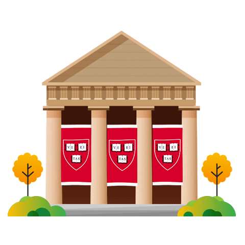

<ion-content class="landing-page-university">

  <div class="university"></div>

  <button class="next" mat-fab color="primary" aria-label="Example icon button with a delete icon" expand="block"
    routerLink="/register-utente" routerDirection="root">
    <mat-icon>arrow_forward</mat-icon>
  </button>

  <button class="back" mat-fab color="primary" aria-label="Example icon button with a delete icon" expand="block"
    routerLink="/landing-page" routerDirection="root">
    <mat-icon>arrow_back</mat-icon>
  </button>


</ion-content>